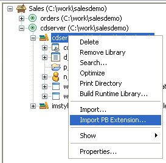
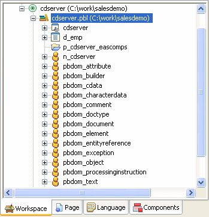

The PBDOM classes are implemented in a DLL file with the suffix PBX (for PowerBuilder extension). The simplest way to add the PBDOM classes to a PowerBuilder target is to import the object descriptions in the pbdom105.pbx PBX file into a library in the PowerBuilder System Tree. You can also the add pbdom105.pbd file, which acts as a wrapper for the classes, to the target's library search path.
The pbdom105.pbx and pbdom105.pbd files are placed in the Shared\PowerBuilder directory when you install PowerBuilder. When you are building a PBDOM application, you do not need to copy pbdom105.pbx to another location, but you do need to deploy it with the application in a directory in the application's search path.
 To import the descriptions in an extension into
a library:
To import the descriptions in an extension into
a library:
In the System Tree, expand the target in which you want to use the extension, right-click a library, and select Import PB Extension from the pop-up menu.

Navigate to the location of the PBX file and click Open.
Each class in the PBX displays in the System Tree so that you can expand it, view its properties, events, and methods, and drag and drop to add them to your scripts.
After you import pbdom105.pbx, the PBDOM objects display in the System Tree:
